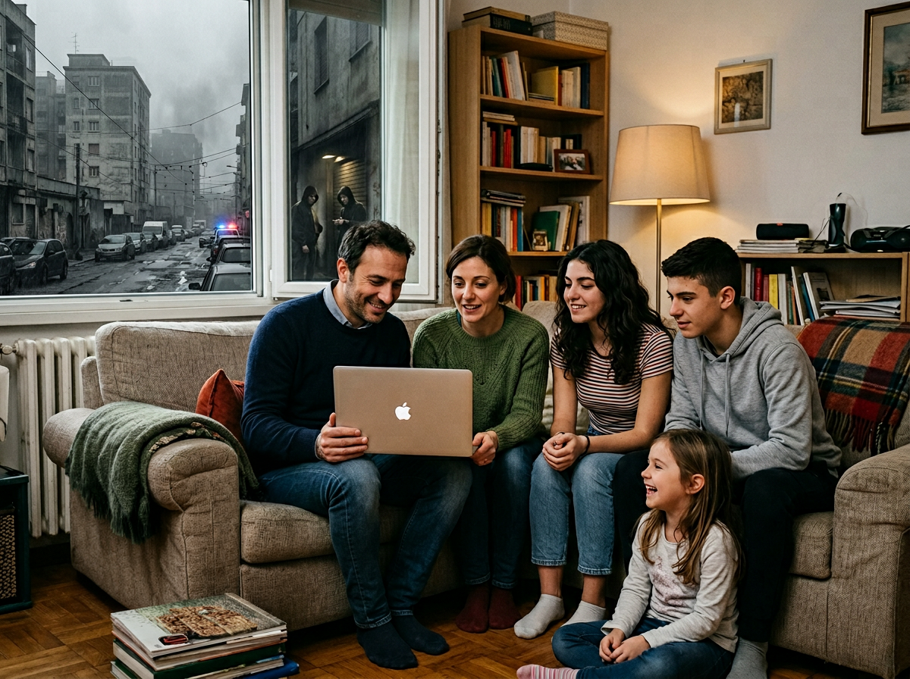
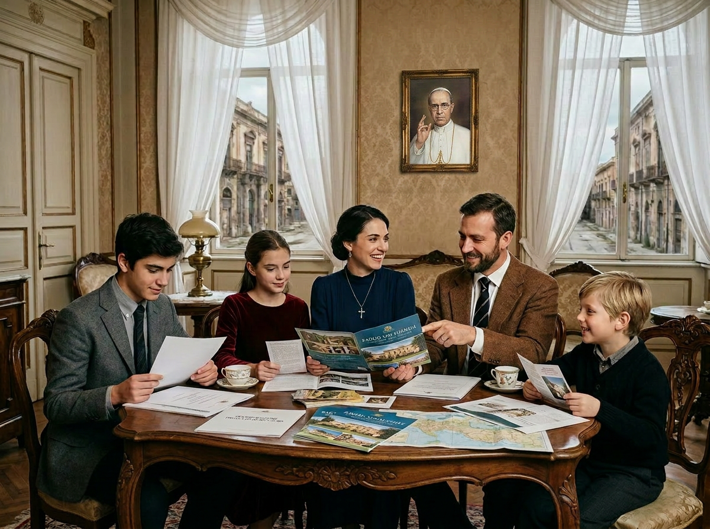

Potential Candidates
Who We’re Looking For

Baglio San Michele exists for families and individuals who are making a deep and far-sighted life choice.
We are primarily looking for family units composed of parents between 35 and 50 years old, with one or more school-age or preschool children, who wish to leave the fast-paced and precarious rhythm of big cities for a preserved rural context in the heart of Sicily.
We are not simply looking for buyers. We are looking for people ready to become active members of a traditional intentional community, founded on reciprocity, the transmission of values, and responsibility toward the common good.
The reasons for a timely choice
We are witnessing a convergence of crises — technological, economic, geopolitical, and cultural — that is making it increasingly difficult for families to lead a stable and rooted life.
Automation and artificial intelligence threaten entire sectors of employment, while large cities are becoming progressively more expensive, anonymous, and unsafe. At the same time, policies inspired by global logics are eroding Italian food sovereignty, penalizing family farming and livestock breeding in favor of concentrated and delocalized production models.
In this context, the ability to guarantee one’s children a safe environment, authentic human relationships, and access to healthy and local food is no longer a given. It becomes instead a strategic and far-sighted choice.
Baglio San Michele is proposed as a concrete response to these transformations: a place in which to rebuild, on traditional but updated foundations, conditions of stability, autonomy, and transmission of values that the process of globalization makes increasingly difficult to preserve.
The motivations guiding the choice

Education of children
An environment in which children grow up in contact with nature and solid values.

Stability and security
A predictable and protected place, far from urban precariousness.

Quality of relationships
Authentic human relationships, in which people truly know and help each other.

Transmission of values
Passing on to children identity, faith, and rootedness in a time of great fragility.
The profiles we are looking for

Families seeking roots
They live in large cities and experience daily the consequences of a fast-paced, anonymous, and precarious existence. They are raising their children in contexts that erode family stability, the transmission of values, and the sense of rootedness. They desire a concrete and generational alternative: a human and stable place where children can grow in contact with nature, with authentic relationships, and with a community of adults who share faith, responsibility, and Sicilian tradition.

Traditional Catholic families
Attentive to the spiritual dimension and value-based education according to Catholic tradition, these families feel the urgency of a context in which faith is not relegated to the private sphere but becomes a living and daily presence, and in which children grow up with solid values, a clear identity, and a sense of rootedness. In an era of secularization and relativism, they desire a community that actively supports the transmission of faith and traditional morality, integrated into family and social life.

Families and singles oriented toward craftsmanship and trades
People (single or in families) who deeply appreciate manual work, traditional trades, and the intergenerational transmission of concrete skills. In an era dominated by abstract and digitized work, they desire a real context in which these abilities can be practiced daily, learned, and passed on to children or younger people, actively contributing to the life of a community.

Families and singles oriented toward Slow Living and the beauty of traditional rural life
People who seek a slower, more authentic, and harmonious pace of life with the landscape and traditions of the territory. Tired of urban frenzy, standardization, and the loss of measure of time, they desire a context in which daily life is marked by natural rhythms, deep relationships, meaningful work, and the concrete beauty of the Iblean landscape.
Let’s get to know each other
If you identify with one of these profiles, you can write to us and we will begin the journey of mutual discovery.